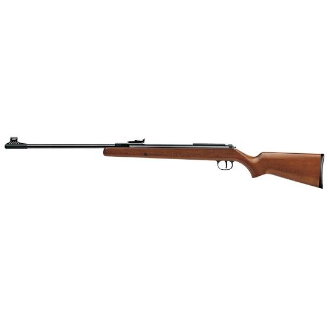
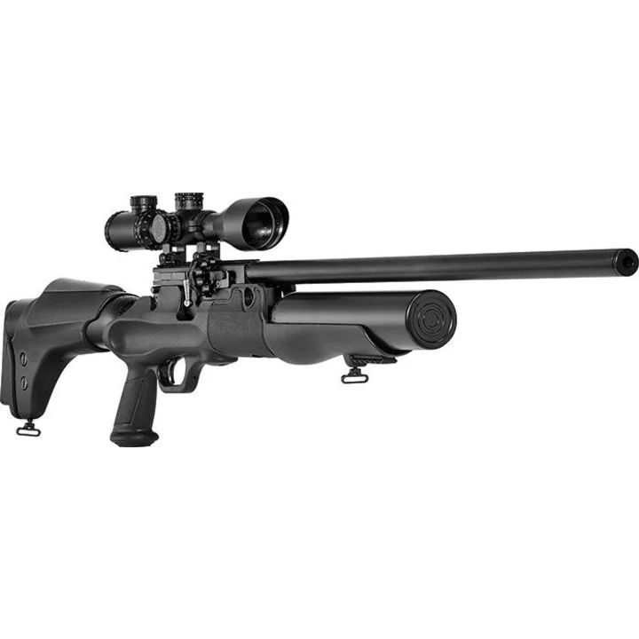
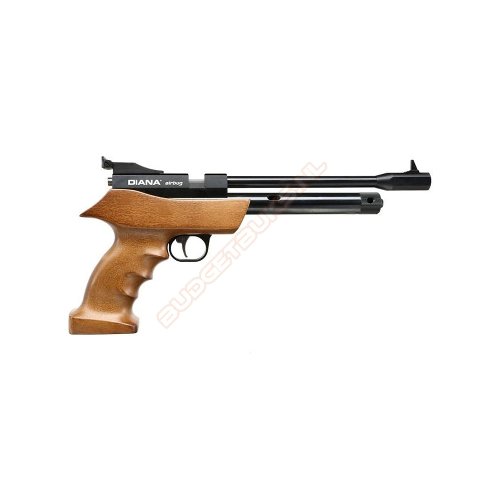
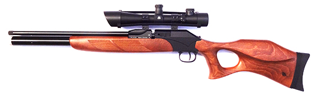
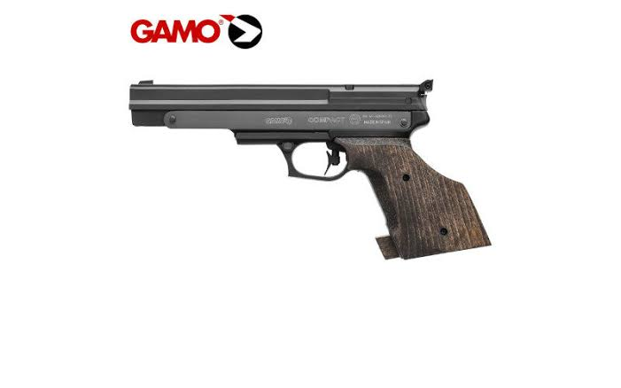

Luchtdrukschieten is een nauwkeurige discipline waarbij controle, ademhaling en een vaste houding centraal staan. Het is een goede start voor nieuwe leden, omdat je stapsgewijs leert omgaan met materiaal, baanregels en wedstrijdvormen.





Binnen de vereniging zijn deelnemers actief in Nederlandse competities binnen het luchtdrukschieten. Zij kunnen nieuwe leden begeleiden en uitleg geven over luchtgeweer, luchtpistool en verantwoord gebruik van materiaal.
Wil je weten of deze discipline bij jou past? Kom kennismaken of stel je vraag via de contactpagina. De vereniging denkt graag mee over een passende eerste stap.
Je werkt aan mikbeeld, trekkercontrole, houding en concentratie.
Ervaren schutters kunnen je helpen met de eerste stappen, materiaalkeuze en veilig baangebruik.
Voor wie verder wil groeien zijn er mogelijkheden om richting wedstrijden en competities te trainen.
Bij de schietsport gelden regels voor leeftijd, begeleiding, legitimatie en toelating. Neem vooraf contact op zodat de vereniging kan uitleggen wat voor jouw situatie mogelijk is.